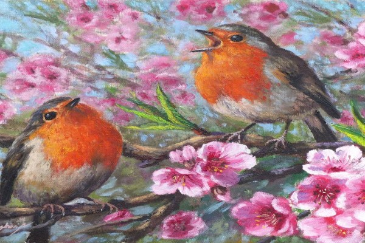
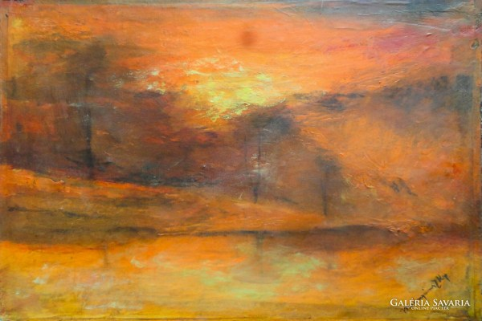
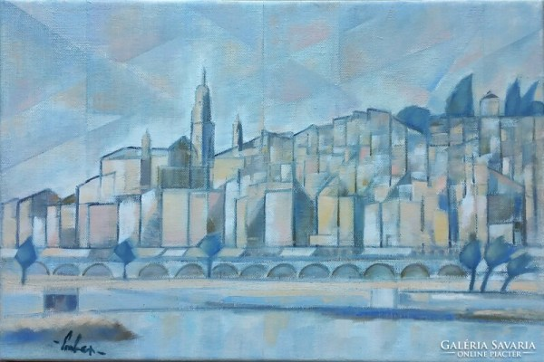
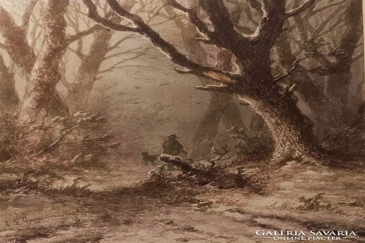
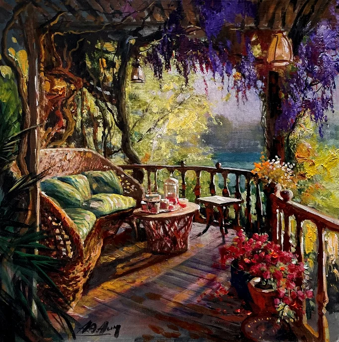
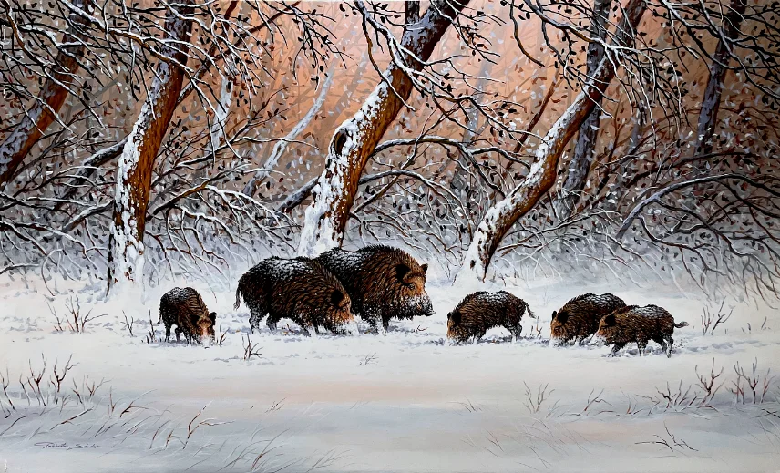
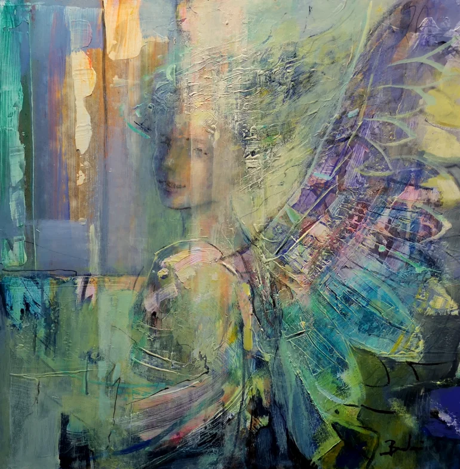

A vörösbegyek
Szamosközi Antal eredeti festményéről készült reprodukció művész vászonra készül professzionális, pigmentes plotterrel, nem kell lakkozni, nem kell üvegezni, fény- és vízálló.
16800 Ft
Naplemente
Mednyánszky szignós festmény.Pazar színvilágú, elragadóan szép festmény.
172200 Ft
Városrészlet - Kubista olajfestmény
Menton, Cote d'Azur - olaj vászon, 27 x 41 cm, j.b.l., j.ho. eredetigazolással.
49000 Ft
Vadászat
Johannes Franciscus Hoppenbrouwers (1819 -1866 ) : Vadászat
35000 Ft
Virágos terasz
Alim Adilov festőművész, 40x40 cm olaj, kasírozott vászon
144.000 Ft
Vaddisznó család - téli erdő
Pankotai Sándor festőművész,60x100 cm, olaj, farost.
284.000 Ft
Szerelmi álom
Budai László festőművész, 60x60 cm, olaj, farost.
215.000 Ft